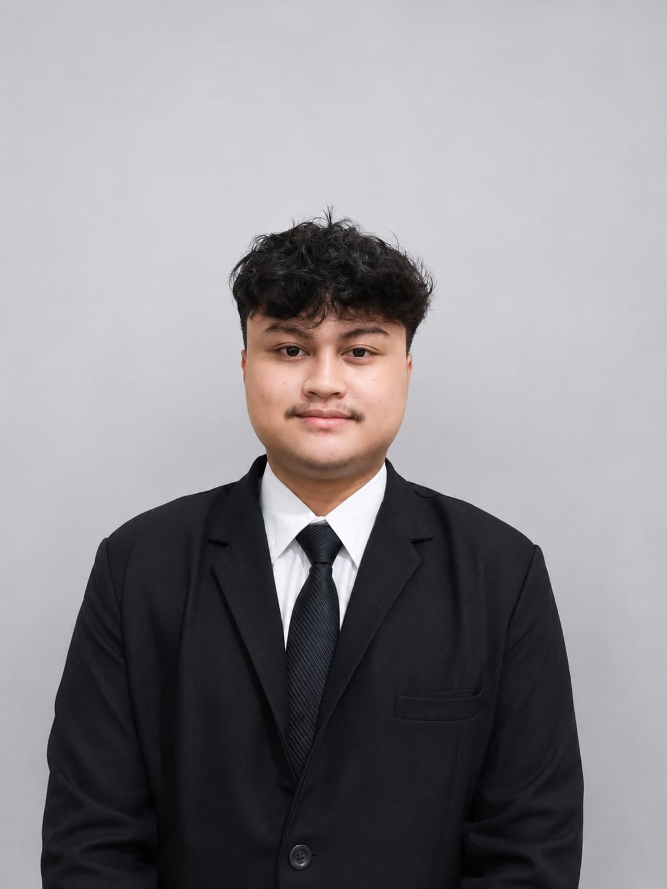
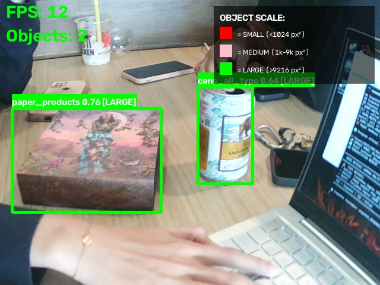

Redesign Website PT PLN Nusa Daya
Mendesain ulang homepage dan customer service website korporat untuk meningkatkan navigasi, keterbacaan, dan kesan profesional BUMN.
Informatics Graduate • UI/UX Designer • AI Enthusiast
Bridging User Experience & Intelligent Systems. Experienced in redesigning corporate interfaces for BUMN and developing real-time object detection models using YOLOv8.
Lihat Proyek Saya
Lulusan Teknik Informatika ITPLN dengan fondasi kuat dari SMK TKJ. Pengalaman magang di PT PLN Nusa Daya (Divisi STI) mengasah kemampuan saya dalam merancang antarmuka digital yang user-friendly sekaligus mengelola aset teknologi ribuan karyawan. Kombinasi hard skill (Python, Figma, SQL) dan soft skill kepemimpinan (Ketua DPH HIMAKA) membuat saya siap berkontribusi di tim yang dinamis.
Mendesain ulang homepage dan customer service website korporat untuk meningkatkan navigasi, keterbacaan, dan kesan profesional BUMN.

Skripsi S1: Mengimplementasikan YOLOv8 Nano untuk deteksi sampah multiskala secara realtime dengan akurasi tinggi pada edge device.
Figma, Canva, SQL, Microsoft Excel, Python (Pandas)
HTML/CSS, C++, YOLOv8, Jupyter Notebook, Google Colab, Git/GitHub
Analytical Thinking, Leadership, Public Speaking, Problem Solving